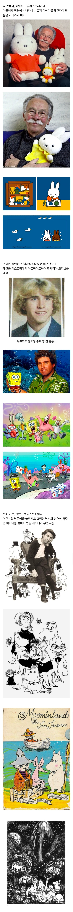

정작 본인은 농담곰처럼살고 농담곰만 그리던사람...
난 무민 예전에 하마인줄 알았음ㅋㅋ
하마아니었어?
난 3분전만해도 하만줄 알고 있었음
요정임
하마요정 ㄷㄷ
트롤이라던데 아닌가
트롤이 요정 아님?
해리포터로 트롤 처음 접해서 그런가 요정이라고는 생각이 안드네 ㄷㄷ
건드리면 좆돼는 하만줄ㅋㅋ
어? 나도 당연히 하마인줄알았는데 ㅅㅂ ㅋㅋㅋㅋㅋㅋㅋㅋㅋㅋㅋㅋ
나의 라임오렌지 나무 작가 어디?
스폰지밥 작가는 ㄹㅇ 맑눈광이네
난 무민이 국산캐릭터인줄 알았어....
스펀지밥 작가는 걍 본인 투영한 오너캐 같은데 ㅋㅋㅋ
무민이 진짜 존나 오래됐드만
무민정부
승희는 고민중이다
잘봤습니다
미피 일본것이 아니였다니...
미피작가님 되게 귀엽다
죠죠 작가 나올 줄 알았는데
파문전사마냥 안 늙으시는 그 분
먼작귀 : 농담곰 작가가 이런식으로 살고 싶다 며 트이타에 끄적인 낙서 하나로 시작됨